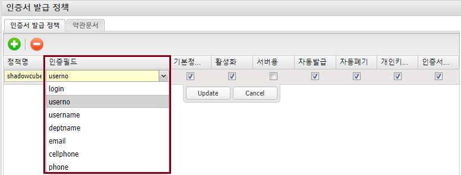
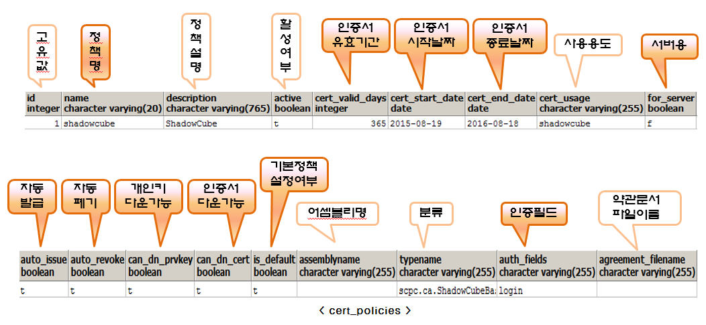
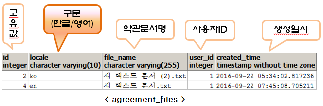

인증서발급 정책 (cert_policies, agreement_files)
-
ShadowCube 클라이언트에서 인증서 발급, 인증서 가져오기 시 최초로 표시되는 발급 정책이다.
-
인증서 발급 정책이 두 개 이상인 경우, ShadowCube 클라이언트에서 선택할 수 있다.
-
인증필드는 userno, login, username, deptname, email, cellphone, phone 이 있으며, 4 개 이하로 구성해야 한다.
-
인증필드에 userno 만 있다면, ShadowCube 클라이언트에서 인증서 발급 시, 사번만 입력하면 된다.

※ 테이블 설명

약관문서
-
ShadowCube 클라이언트에서 인증서 발급 시, 고객사 자체 약관문서를 출력하기 위한 정책이다.
※ 테이블 설명

이전